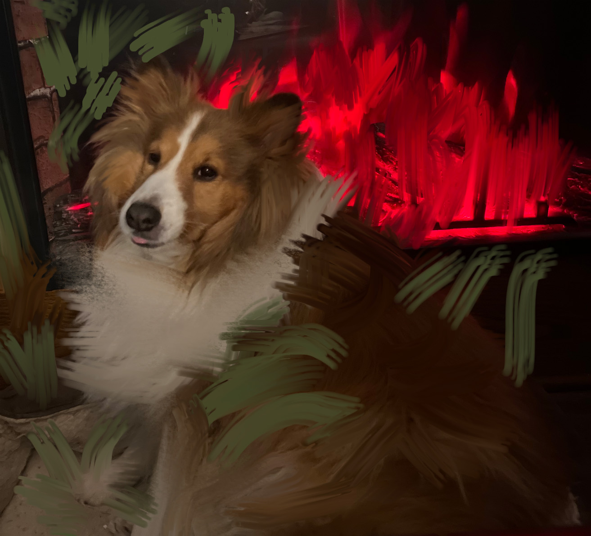

Photoshop
Lesson 12: Dreamscape
I created a compsite poster by using a mask, drop shadow, create a water ripples, and glow effect for all the images in photoshop.
Lesson 11: Videos
I made videos while using transitions and audios in photoshop.
Lesson 10: Composite Operations
I put all the images to created a Frankstin Poster while using few type of tools in photoshop.
Lesson 9 Countied: Personal Mixer Brush Painting
Before
After
Lesson 9: Mixer Brush and landscape Paintings
I created these paintings with using different brushes on the paint brush tool on photoshop.
Lesson 8 Countied: Personal Vector Drawing
Before
Afrer
Lesson 8: Vector Drawings
I created and drew out a vector images while using the pen and convert tools.
Niagra Falls
I created a postcard while using the shapes, gradient, and text tools.

Colorizations
I learned how to use the magnetic lasso, quick selection, paint brush, and paint bucket tools on the raster images.
Merger & Selections
I created using the merger and selections on the raster image.
Faceswap
I created a faceswap while using the Auto blend Layers option to edit the faces.
China Postcard
I learned how to create layers, shapes, texts, effects, stroke, drop shadow to use for china postcard.
Masking
I learned how to custom shapes, select, masking,title for the images.
Restoration
I learned how to use clone stamp, content aware, and brush tools to fixed the old photo.
Lion Phlearn & College Border
I used the select & masks to make the lion more real and natural. The college border I put these images to each border to make it nice and neat.
College
I used the filter and render to created the clouds in the background. I used the text tool to create a wave and apple chancery. The rest of of the photos I used the custom heart shape tool, effects, stroke, and drop shadows for the college.